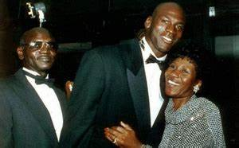

Infancia:
En la escuela, quería ingresar al segundo año del equipo de baloncesto, pero fue rechazado por ser demasiado bajo. En lugar de estar deprimido, se unió al equipo de baloncesto juvenil de la escuela. Jugó excepcionalmente bien y trabajó duro para aumentar su altura. Después de impresionar a todos, fue elegido para el 'McDonald's All-American Team', recibió una beca de la Universidad de Carolina del Norte, en base a su desempeño en el baloncesto. En la universidad, se especializó en geografía cultural. Jordan fue nombrado "novato del año" por la "Conferencia de la Costa Atlántica". En 1982, su tiro fue un factor importante en el equipo que ganó el 'Campeonato de la NCAA' contra la 'Universidad de Georgetown'.

Familia:
Michael Jordan nacio en New York en 1963 y es considerado por muchos fanaticos y analistas deportivos como el mejor jugador de la historia. Fue en la Universidad de Carolina del Norte donde le concedieron una beca de baloncesto. En la temporada 1983-1984 fue elegido mejor jugador universitario y, este último año, ganó la medalla de oro en los Juegos Olímpicos con la selección de Estados Unidos.

Su carrera en los Bulls:
En 1984 Michael Jordan abandonó la universidad para pasar a jugar con los Chicago Bulls de la NBA.
Finalizó la temporada de 1986-1987 como segundo jugador, tras Wilt Chamberlain, en anotar más de
3.000 puntos en una sola temporada. Fue máximo anotador de la NBA durante siete temporadas consecutivas (1987-1993), con una media de 30 puntos por partido en todas las temporadas. Se convirtió en máximo anotador de los Chicago Bulls, con 21.541 puntos y batió muchos récords de puntuaciones de la NBA.
Michael Jordan llevó a los Chicago Bulls a conseguir su primer campeonato de la NBA en 1991, título que revalidó de forma consecutiva en 1992 y 1993, luego ganaría 3 campeonatos seguidos nuevamente en 1996,1997 y 1998. Además, formó parte del Dream Team (Equipo de Ensueño), que obtuvo la medalla de oro en los Juegos celebrados en 1992 en Barcelona.